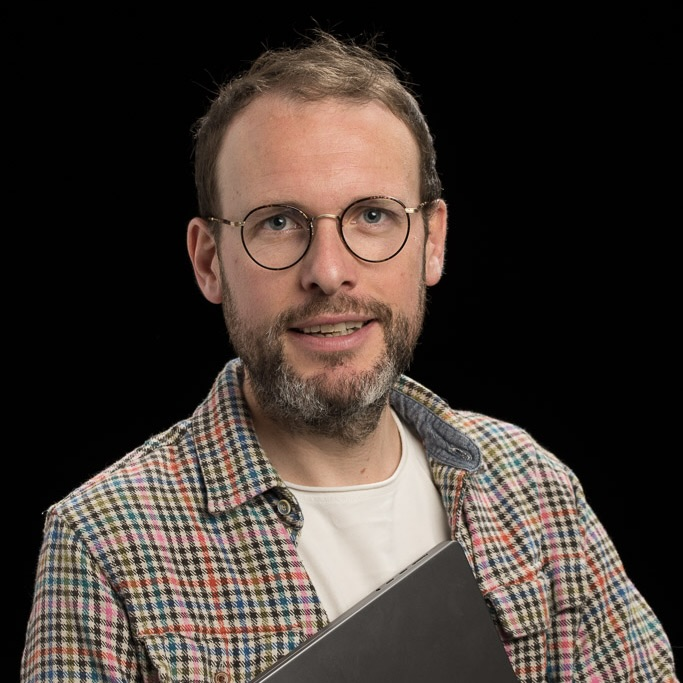

Biography
Olivier Gourgue is a marine ecosystem modeler, specialized in the development of advanced numerical models to understand coastal and shelf sea ecosystems and their responses to climate change. He coordinates the development of COHERENS, a modular hydrodynamic modeling system that integrates biological and sediment transport components. With a PhD from UCLouvain and postdoctoral experiences at UAntwerp and Boston University, his work has contributed to advancing knowledge of sediment transport in coastal and estuarine environments, as well as the resilience of coastal wetlands. He serves as an Associate Editor for Estuarine, Coastal and Shelf Science.
Experience
- Royal Belgian Institute of Natural Sciences | Brussels, Belgium
Senior Researcher | 2022-Current - University of Antwerp | Antwerp, Belgium
Postdoctoral Researcher | 2016-2022 - Boston University | Boston, MA, USA
Visiting Scholar | 2019-2021 - Vrije Universiteit Brusssel | Brussels, Belgium
Postdoctoral Researcher | 2013-2016 - Flanders Hydraulics | Antwerp, Belgium
Consultant | 2013-2016 - UCLouvain | Louvain-la-Neuve, Belgium
Postdoctoral Researcher | 20011-2013
Teaching Assistant | 2006-2012
PhD Researcher | 2005-2011
Education
- UCLouvain | Louvain-la-Neuve, Belgium
PhD Engineering Science | 2005-2011
MSc Mechanical Engineering | 2002-2005
BSc Engineering Science | 2000-2002
Projects
- COHERENS: COupled Hydrodynamical-Ecological model for REgioNal and Shelf seas.
Publications
2025
- P. Khedri, O. Gourgue, J. Depestele, S. van de Velde, S. Arndt, Reconciling the impact of mobile bottom-contact fishing on marine organic carbon sequestration, ICES Journal of Marine Science, 82, 9, fsaf154. DOI
- T. Groffen, K. Schouten, J. Donaire Zamora, O. Gourgue, L. Bervoets, S. Temmerman, Spatial distribution of per- and polyfluoroalkyl substances (PFAS) in natural and restored intertidal wetlands in the Scheldt estuary, Journal of Hazardous Materials, 496, 139247. DOI
- I. Pelckmans, J.-P. Belliard, O. Gourgue, L.E. Dominguez-Granda, S. Temmerman, Mangrove vegetation density and channel drainage density have trade-off effects on nature-based flood risk mitigation in estuaries, Journal of Geophysical Research: Oceans, 130, 7, e2025JC022398. DOI
- I. Pelckmans, B. Vermeulen, J.A. Ramos-Veliz, A.M. Rosado-Moncayo, J.-P. Belliard, O. Gourgue, C. Slobbe, L.E. Dominguez-Granda, S. Temmerman, Strong attenuation of high water levels observed in tropical mangroves, Limnology and Oceanography, 70, 9, 2405-2416. DOI
- L. Alaerts, J. Lambrechts, N.R. Randresihaja, L. Vandenbulcke, O. Gourgue, E. Hanert, M. Grégoire, An integrated high-resolution bathymetric model for the Danube Delta system, Earth System Science Data, 17, 7, 3125-3140. DOI
- D. Wang, C. Gu, S. Temmerman, J.-P. Belliard, O. Gourgue, L. Xue, J. Bai, Coastal marsh vulnerability to sea-level rise is exacerbated by plant species invasion, Global Change Biology, 31, 2, e70058. DOI
- D. Wang, J. Bai, C. Gu, O. Gourgue, J.-P. Belliard, L. Cui, Y. Ke, L. Xue, L. Wen, S. Temmerman, How does landscape vegetation configuration regulate local channel initiation in a rapidly expanding micro-tidal system? Journal of Hydrology, 649, 132473. DOI
2024
- O. Gourgue, J.-P. Belliard, Y. Xu, M.G. Kleinhans, S. Fagherazzi, S. Temmerman, Dense vegetation hinders sediment transport towards saltmarsh interiors, Limnology and Oceanography Letters, 9, 6, 764-775. DOI
- A.S. Gozingan, Z. Sohou, K. Baetens, F. Bonou, E. Baloïtcha, O. Gourgue, H. Romanelli, A. Capet, G. Lacroix, A 3D numerical baroclinic application of the COHERENS model in the Gulf of Guinea, West Africa, Regional Studies in Marine Science, 79, 103811. DOI
- Z. Liu, S. Fagherazzi, Q. He, O. Gourgue, J. Bai, X. Liu, C. Miao, Z. Hu, B. Cui, A global meta-analysis on the drivers of salt marsh planting success and implications for ecosystem services, Nature Communications, 15, 1, 3643. DOI
- S. Hautekiet, J.-E. Rossius, O. Gourgue, M.G. Kleinhans, S. Temmerman, On the relative role of abiotic and biotic controls in channel network development: insights from scaled tidal flume experiments, Earth Surface Dynamics, 12, 2, 601-619. DOI
- I. Pelckmans, J.-P. Belliard, O. Gourgue, L.E. Dominguez-Granda, S. Temmerman, Mangroves as nature-based mitigation for ENSO-driven compound flood risks in a river delta, Hydrology and Earth System Sciences, 28, 6, 1463-1476. DOI
2023
- R. van de Vijsel, J. van Belzen, T.J. Bouma, D. van der Wal, B.W. Borsje, S. Temmerman, L. Cornacchia, O. Gourgue, J. van de Koppel, Vegetation controls on channel network complexity in coastal wetlands, Nature Communications, 14, 1, 7158. DOI
- I. Pelckmans, J.-P. Belliard, L.E. Dominguez-Granda, C. Slobbe, S. Temmerman, O. Gourgue, Mangrove ecosystem properties regulate high water levels in a river delta, Natural Hazards and Earth System Sciences, 23, 9, 3169-3183. DOI
- J.-P. Belliard, O. Gourgue, G. Govers, M.L. Kirwan, S. Temmerman, Coastal wetland adaptability to sea level rise: The neglected role of semi-diurnal vs. diurnal tides, Limnology and Oceanography Letters, 8, 2, 340-349. DOI
2022
- O. Gourgue, J. van Belzen, C. Schwarz, W. Vandenbruwaene, J. Vanlede, J.P. Belliard, S. Fagherazzi, T.J. Bouma, J. van de Koppel, S. Temmerman, Biogeomorphic modeling to assess the resilience of tidal-marsh restoration to sea level rise and sediment supply, Earth Surface Dynamics, 10, 3, 531-553. DOI
- Z. Liu, O. Gourgue, S. Fagherazzi, Biotic and abiotic factors control the geomorphic characteristics of channel networks in salt marshes, Limnology and Oceanography, 67, 1, 89-101. DOI
2021
- H. Cao, Z. Zhu, J. van Belzen, O. Gourgue, J. van de Koppel, S. Temmerman, P.M.J. Herman, L. Zhang, L. Yuan, T.J. Bouma, Salt marsh establishment in poorly consolidated muddy systems: effects of surface drainage, elevation, and plant age, Ecosphere, 12, 9, e03755. DOI
- J.-P. Belliard, L.E. Dominguez-Granda, J.A. Ramos-Veliz, A.M. Rosado-Moncayo, J. Nath, G. Govers, O. Gourgue, S. Temmerman, El Nino driven extreme sea levels in an Eastern Pacific tropical river delta: Landward amplification and shift from oceanic to fluvial forcing, Global and Planetary Change, 203, 103529. DOI
- O. Gourgue, J. van Belzen, C. Schwarz, T.J. Bouma, J. van de Koppel, S. Temmerman, A convolution method to assess subgrid-scale interactions between flow and patchy vegetation in biogeomorphic models, Journal of Advances in Modeling Earth Systems, 13, 2, e2020MS002116. DOI
2018
- C. Schwarz, O. Gourgue, J. van Belzen, Z. Zhu, T.J. Bouma, J. van de Koppel, G. Ruessink, N. Claude, S. Temmerman, Self-organization of a biogeomorphic landscape controlled by plant life-history traits, Nature Geoscience, 11, 9, 672-677. DOI
2016
- C. Pham Van, O. Gourgue, M. Sassi, A.J.F. Hoitink, E. Deleersnijder, S. Soares-Frazao, Modelling fine-grained sediment transport in the Mahakam land-sea continuum, Indonesia, Journal of Hydro-environment Research, 13, 103-120. DOI
2014
- M. Elskens, O. Gourgue, W. Baeyens, L. Chou, E. Deleersnijder, M. Leermakers, A. de Brauwere, Modelling metal speciation in the Scheldt Estuary: Combining a flexible-resolution transport model with empirical functions, Science of the Total Environment, 476, 346-358. DOI
- A. de Brauwere, O. Gourgue, B. de Brye, P. Servais, K. Ouattara, E. Deleersnijder, Integrated modelling of faecal contamination in a densely populated river-sea continuum (Scheldt River and Estuary), Science of the Total Environment, 468, 31-45. DOI
2013
- B. de Brye, A. de Brauwere, O. Gourgue, E.J.M. Delhez, E. Deleersnijder, Reprint of Water renewal timescales in the Scheldt Estuary, Journal of Marine Systems, 128, 3-16. DOI
- O. Gourgue, W. Baeyens, M.S. Chen, A. de Brauwere, B. de Brye, E. Deleersnijder, M. Elskens, V. Legat, A depth-averaged two-dimensional sediment transport model for environmental studies in the Scheldt Estuary and tidal river network, Journal of Marine Systems, 128, 27-39. DOI
2012
- B. de Brye, A. de Brauwere, O. Gourgue, E.J.M. Delhez, E. Deleersnijder, Water renewal timescales in the Scheldt Estuary, Journal of Marine Systems, 94, 74-86. DOI
2011
- T. Kärnä, B. de Brye, O. Gourgue, J. Lambrechts, R. Comblen, V. Legat, E. Deleersnijder, A fully implicit wetting-drying method for DG-FEM shallow water models, with an application to the Scheldt Estuary, Computer Methods in Applied Mechanics and Engineering, 200, 5-8, 509-524. DOI
2010
- J. Lambrechts, C. Humphrey, L. McKinna, O. Gourgue, K.E. Fabricius, A.J. Mehta, S. Lewis, E. Wolanski, Importance of wave-induced bed liquefaction in the fine sediment budget of Cleveland Bay, Great Barrier Reef, Estuarine, Coastal and Shelf Science, 89, 2, 154-162. DOI
- B. de Brye, A. de Brauwere, O. Gourgue, T. Kärnä, J. Lambrechts, R. Comblen, E. Deleersnijder, A finite-element, multi-scale model of the Scheldt tributaries, river, estuary and ROFI, Coastal Engineering, 57, 9, 850-863. DOI
2009
- O. Gourgue, R. Comblen, J. Lambrechts, T. Kärnä, V. Legat, E. Deleersnijder, A flux- limiting wetting-drying method for finite-element shallow-water models, with application to the Scheldt Estuary, Advances in Water Resources, 32, 12, 1726-1739. DOI
- A. de Brauwere, F. De Ridder, O. Gourgue, J. Lambrechts, R. Comblen, R. Pintelon, J. Passerat, P. Servais, M. Elskens, W. Baeyens, T. Karna, B. de Brye, E. Deleersnijder, Design of a sampling strategy to optimally calibrate a reactive transport model: Exploring the potential for Escherichia coli in the Scheldt Estuary, Environmental Modelling and Software, 24, 8, 969-981. DOI
2007
- O. Gourgue, E. Deleersnijder, L. White, Toward a generic method for studying water renewal, with application to the epilimnion of Lake Tanganyika, Estuarine, Coastal and Shelf Science, 74, 4, 628-640. DOI
Code and software
- Demeter: Multiscale biogeomorphic modeling framework in Python.
- TidalGeoPro: Python package to analyze geometric and hydraulic properties of tidal channels.
- VFC: Vegetation/Flow Convolution Python module.